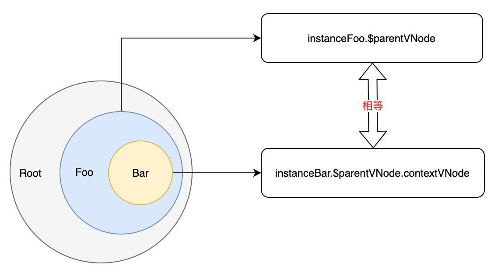
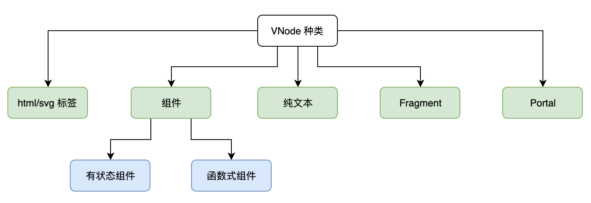

假设我们有如下模板：
<MyComponent>
<div></div>
</MyComponent>
由这段模板可知，我们为 MyComponent 组件提供了一个空的 div 标签作为默认插槽内容，从DOM结构上看 <MyComponent> 标签有一个 div 标签作为子节点，通常我们可以将其编译为如下 VNode：
const compVNode = {
flags: VNodeFlags.COMPONENT_STATEFUL_NORMAL,
tag: MyComponent,
children: {
flags: VNodeFlags.ELEMENT,
tag: 'div'
}
}
这其实没什么问题，但是我们更倾向于新建一个 slots 属性来存储这些子节点，这在语义上更加贴切，所以我们希望将模板编译为如下 VNode：
const compVNode = {
flags: VNodeFlags.COMPONENT,
tag: MyComponent,
children: null,
slots: {
// 默认插槽
default: {
flags: VNodeFlags.ELEMENT,
tag: 'div'
}
}
}
可以看到，如上 VNode 的 children 属性值为 null。当我们使用 mountComponent 函数挂载如上 VNode 时，我们可以在组件实例化之后并且在组件的渲染函数执行之前将 compVNode.slots 添加到组件实例对象上，这样当组件的渲染函数执行的时候，就可以访问插槽数据：
function mountComponent(vnode, container) {
// 创建组件实例
const instance = new vnode.tag()
// 设置 slots
instance.$slots = vnode.slots
// 渲染
instance.$vnode = instance.render()
// 挂载
mountElement(instance.$vnode, container)
vnode.ref && vnode.ref(instance)
}
在 MyComponent 组件的 render 函数内，我们就可以通过组件实例访问 slots 数据：
class MyComponent {
render() {
return {
flags: VNodeFlags.ELEMENT,
tag: 'h1'
children: this.$slots.default
}
}
}
实际上，这就是普通插槽的实现原理，至于作用域插槽(scopedSlots)，与普通插槽并没有什么本质的区别，我们知道作用域插槽可以访问子组件的数据，在实现上来看其实就是函数传参：
class MyComponent {
render() {
return {
flags: VNodeFlags.ELEMENT,
tag: 'h1'
// 插槽变成了函数，可以传递参数
children: this.$slots.default(1)
}
}
}
如上代码所示，只要 this.$slots.default 是函数即可实现，所以在模板编译时，我们最终需要得到如下 VNode：
const compVNode = {
flags: VNodeFlags.COMPONENT,
tag: MyComponent,
children: null,
slots: {
// 作用域插槽，可以接受组件传递过来的数据
default: (arg) => {
const tag = arg === 1 ? 'div' : 'h1'
return {
flags: VNodeFlags.ELEMENT,
tag
}
}
}
}
现在你应该明白为什么普通插槽和作用域插槽本质上并没有区别了，因为普通插槽也可以是函数，只是不接收参数罢了。这么看的话其实普通插槽是作用域插槽的子集，那为什么不将它们合并呢？没错从 Vue2.6 起已经将之合并，所有插槽在 VNode 中都是函数，一个返回 VNode 的函数。
TIP
用过 React 的朋友，这让你想起 Render Prop 了吗！
# key 和 ref
key 就像 VNode 的唯一标识，用于 diff 算法的优化，它可以是数字也可以是字符串：
{
flags: VNodeFlags.ELEMENT_HTML,
tag: 'li',
key: 'li_0'
}
ref 的设计是为了提供一种能够拿到真实DOM的方式，当然如果将 ref 应用到组件上，那么拿到的就是组件实例，我们通常会把 ref 设计成一个函数，假设我们有如下模板：
<div :ref="el => elRef = el"></div>
我们可以把这段模板编译为如下 VNode：
const elementVNode = {
flags: VNodeFlags.ELEMENT_HTML,
tag: 'div',
ref: el => elRef = el
}
在使用 mountElement 函数挂载如上 VNode 时，可以轻松的实现 ref 功能：
function mountElement(vnode, container) {
const el = document.createElement(vnode.tag)
container.appendChild(el)
vnode.ref && vnode.ref(el)
}
如果挂载的是组件而非普通标签，那么只需要将组件实例传递给 vnode.ref 函数即可：
function mountComponent(vnode, container) {
// 创建组件实例
const instance = new vnode.tag()
// 渲染
instance.$vnode = instance.render()
// 挂载
mountElement(instance.$vnode, container)
vnode.ref && vnode.ref(instance)
}
# parentVNode 以及它的作用
与 VNode 的 slots 属性相同，parentVNode 属性也是给组件的 VNode 准备的，组件的 VNode 为什么需要这两个属性呢？它俩的作用又是什么呢？想弄清楚这些，我们至少要先弄明白：一个组件所涉及的 VNode 都有哪些。什么意思呢？看如下模板思考一个问题：
<template>
<div>
<MyComponent />
</div>
</template>
从这个模板来看 MyComponent 组件至少涉及到两个 VNode，第一个 VNode 是标签 <MyComponent /> 的描述，其次 MyComponent 组件本身也有要渲染的内容，这就是第二个 VNode。
- 第一个
VNode用来描述<MyComponent />标签：
{
// 省略...
tag: MyComponent
}
- 第二个
VNode是组件渲染内容的描述，即组件的render函数产出的VNode：
class MyComponent {
render () {
return {/* .. */} // 产出的 VNode
}
}
组件实例的 $vnode 属性值就是组件 render 函数产出的 VNode，这通过如下代码可以一目了然：
function mountComponent(vnode, container) {
// 创建组件实例
const instance = new vnode.tag()
// 渲染，$vnode 的值就是组件 render 函数产出的 VNode
instance.$vnode = instance.render()
// 挂载
mountElement(instance.$vnode, container)
vnode.ref && vnode.ref(instance)
}
而 instance.$vnode.parentVNode 的值就是用来描述组件(如：<MyComponent />)标签的 VNode，我们只需在如上代码中添加一行代码即可实现：
function mountComponent(vnode, container) {
// 创建组件实例
const instance = new vnode.tag()
// 渲染，$vnode 的值就是组件 render 函数产出的 VNode
instance.$vnode = instance.render()
// vnode 就是用来描述组件标签的 VNode
instance.$vnode.parentVNode = vnode
// 挂载
mountElement(instance.$vnode, container)
vnode.ref && vnode.ref(instance)
}
同时我们也可以在组件实例上添加 $parentVNode 属性，让其同样引用组件的标签描述：
function mountComponent(vnode, container) {
// 创建组件实例
const instance = new vnode.tag()
// 渲染，$vnode 的值就是组件 render 函数产出的 VNode
instance.$vnode = instance.render()
// vnode 就是用来描述组件标签的 VNode
instance.$parentVNode = instance.$vnode.parentVNode = vnode
// 挂载
mountElement(instance.$vnode, container)
vnode.ref && vnode.ref(instance)
}
组件的实例为什么需要引用 parentVNode 呢？这是因为组件的事件监听器都在 parentVNode 上，如下模板所示：
<MyComponent @click="handleClick" />
这段模板可以用如下 VNode 描述：
const parentVNode = {
// 省略...
tag: MyComponent,
data: {
onclick: () => handleClick()
}
}
当你在组件中发射(emit)事件时，就需要去 parentVNode 中找到对应的事件监听器并执行：
// 组件实例的 $emit 实现
class MyComponent {
$emit(eventName, ...payload) {
// 通过 parentVNode 拿到其 VNodeData
const parentData = this.$parentVNode.data
// 执行 handler
parentData[`on${eventName}`](payload)
},
handleClick() {
// 这里就可以通过 this.$emit 发射事件
this.$emit('click', 1)
}
}
实际上，这就是事件的实现思路。由于 $emit 是框架层面的设计，所以我们在设计框架时可以提供一个最基本的组件，将框架层面的设计都归纳到该组件中：
class Component {
$emit(eventName, ...payload) {
// 通过 parentVNode 拿到其 VNodeData
const parentData = this.$parentVNode.data
// 执行 handler
parentData[`on${eventName}`](payload)
}
// 其他......
}
这样框架的使用者在开发组件时，只需要继承我们的 Component 即可：
// 用户的代码
import { Component } from 'vue'
class MyComponent extends Component {
handleClick() {
// 直接使用即可
this.$emit('click', 1)
}
}
# contextVNode
我们已经知道了与一个组件相关的 VNode 有两个，一个是组件自身产出的 VNode，可以通过组件实例的 instance.$vnode 访问，另一个是当使用组件时用来描述组件标签的 VNode，我们可以通过组件实例的 instance.$parentVNode 访问，并且：
instance.$vnode.parentVNode === instance.$parentVNode
那么 contextVNode 是什么呢？实际上子组件标签描述的 VNode.contextVNode 是父组件的标签描述 VNode，或者说子组件实例的 $parentVNode.contextVNode 是父组件实例的 $parentVNode，假设根组件渲染了 Foo 组件，而 Foo 组件又渲染 Bar 组件，此时就形成了一条父子链：Bar 组件的父组件是 Foo。

为什么子组件的标签描述 VNode 需要引用父组件的标签描述 VNode 呢？这是因为一个组件的标签描述 VNode 中存储着该组件的实例对象，即 VNode.children 属性。还记得之前我们讲到过，对于组件来说，它的 VNode.children 属性会存储组件实例对象吗。这样通过这一层引用关系，子组件就知道它的父组件是谁，同时父组件也知道它有哪些子组件。
语言描述会有些抽象，我们拿具体案例演示一下，假设我们的根组件有如下模板：
<!-- 根组件模板 -->
<template>
<Foo/>
</template>
它对应的 VNode 如下：
const FooVNode = {
flags: VNodeFlags.COMPONENT,
tag: Foo, // Foo 指的是 class Foo {}
}
接着 Foo 组件的模板如下，它渲染了 Bar 组件：
<!-- 组件 Foo 的模板 -->
<template>
<Bar/>
</template>
它对应的 VNode 如下：
const BarVNode = {
flags: VNodeFlags.COMPONENT,
tag: Bar, // Foo 指的是 class Bar {}
}
我们使用 mountComponent 函数挂载 FooVNode 组件：
mountComponent(FooVNode, container)
function mountComponent(vnode, container) {
// 创建 Foo 组件实例
const instance = new vnode.tag()
// 渲染，instance.$vnode 的值就是 BarVNode
instance.$vnode = instance.render()
// 使用 mountComponent 函数递归挂载 BarVNode
mountComponent(instance.$vnode, container)
vnode.ref && vnode.ref(instance)
}
如上代码所示，首先我们调用 mountComponent 函数挂载 FooVNode，会创建 Foo 组件实例，接着调用 Foo 组件实例的 render 函数得到 Foo 组件产出的 VNode，这其实就是 BarVNode，由于 BarVNode 的类型也是组件，所以我们会递归调用 mountComponent 挂载 BarVNode，最终 mountComponent 函数会执行两次。接下来我们为使用 contextVNode 完善上面的代码，看看如何来建立起父子链：
mountComponent(FooVNode, container)
function mountComponent(vnode, container, contextVNode = null) {
// 创建组件实例
const instance = new vnode.tag()
if (contextVNode) {
const parentComponent = contextVNode.children
instance.$parent = parentComponent
parentComponent.$children.push(instance)
instance.$root = parentComponent.$root
} else {
instance.$root = instance
}
// 渲染
instance.$vnode = instance.render()
// 使用 mountComponent 函数递归挂载
mountComponent(instance.$vnode, container, vnode)
vnode.ref && vnode.ref(instance)
}
如上高亮代码所示，我们为 mountComponent 函数添加了第三个参数 contextVNode，我们可以一下这个过程发生了什么：
- 1、初次调用
mountComponent挂载FooVNode时，没有传递第三个参数，所以contextVNode = null，这时说明当前挂载的组件就是根组件，所以我们让当前组件实例的$root属性值引用其自身。 - 2、当递归调用
mountComponent挂载BarVNode时，我们传递了第三个参数，并且点三个参数是FooVNode。此时contextVNode = FooVNode，我们通过contextVNode.children即可拿到Foo组件的实例，并把它赋值给Bar组件实例的$parent属性，同时把Bar组件实例添加到Foo组件实例的$children数组中，这样这条父子链就成功建立了。
实际上，除了组件实例间建立父子关系，组件的 VNode 间也可以建立父子关系，只需要增加一行代码即可：
mountComponent(FooVNode, container)
function mountComponent(vnode, container, contextVNode = null) {
vnode.contextVNode = contextVNode
// 省略...
}
为什么要在组件的 VNode 上也建立这种父子联系呢？答案是在其他地方有用到，这么做就是为了在某些情况下少传递一些参数，直接通过 VNode 之间的联系找到我们想要的信息即可。另外在如上的演示中，我们省略了避开函数式组件的逻辑，因为函数式组件没有组件实例，所谓的父子关系只针对于有状态组件。实现逻辑很简单，就是通过一个 while 循环沿着父子链一直向上找到第一个非函数式组件，并把该组件的实例作为当前组件实例的 $parent 即可。
# el
VNode 既然是真实DOM的描述，那么理所应当的，当它被渲染完真实DOM之后，我们需要将真实DOM对象的引用添加到 VNode 的 el 属性上。由于 VNode 具有不同的类型，不同类型的 VNode 其 el 属性所引用的真实DOM对象也不同，下图展示了所有 VNode 类型：

- 1、
html/svg标签
其 el 属性值为真实DOM元素的引用：
{
tag: 'div',
el: div 元素的引用 // 如 document.createElement('div')
}
- 2、组件
其 el 属性值为组件本身所渲染真实DOM的根元素：
{
tag: MyComponent,
el: instance.$vnode.el
}
- 3、纯文本
其 el 属性值为文本元素的引用：
{
tag: null,
children: 'txt',
el: 文本元素的引用 // 如 document.createTextNode('txt')
}
- 4、Fragment
其 el 属性值为片段中第一个DOM元素的引用：
{
tag: null,
children: [
{
tag: 'h1'
},
{
tag: 'h2'
}
],
el: h1 元素的引用而非 h2
}
当然片段本身可能是一个空数组，即 children 属性值为 []，此时代表该片段不渲染任何东西，但在框架设计中，我们会渲染一个空的文本节点占位，所以此时 el 属性值为该占位的空文本元素的引用：
{
tag: null,
children: [],
el: 占位的空文本元素 // document.createTextNode('')
}
- 5、Portal
Portal 比较特殊，根据 Portal 寓意，其内容可以被渲染到任何地方，但其真正的挂载点会有一个空文本节点占位，所以 Portal 的 VNode.el 属性值引用的始终是这个空文本节点。当然这是 vue3 的设计，理论上将我们完全可以做到让 el 引用真正的挂载容器元素。
{
tag: null,
children: [...],
el: 占位的空文本元素 // document.createTextNode('')
}